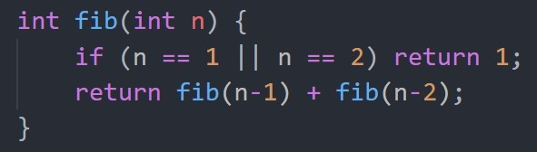

General
Memoization is a technique that reduces computation time by storing previously computed answers.
Each time you call a function to compute an answer, if that answer has aready been computed before, simply
return the answer. Otherwise compute it recursively and store the answer before returing the answer. By storing the
answer you keep track of what has been computed already and therefore no need to compute again. With memoization, the
function is only called once for each value, the run time is then linear time and not exponential time.
Fibonacci sequences
1, 1, 2, 3, 5, 8, 13, 21, 34, 55...
The sequence begins with 1, 1 and each nth Fibonacci number is the sum of the previous two Fibonacci numbers.
Heres a basic C++ function for Fibonacci numbers:

This function gives the correct answers but it extremely inefficent. This is how the recursion tree looks like:

From the tree you can see that this program will recaluate some Fibonacci numbers mutliple times. For example, f(1) is calculated 8 times. These repeated calucations causes the program to make an exponential amount of recursive calls.
Solution-Memoization
- Declare a static array of integers of size 100 and initized to 0.
- Check if memo[n] is 0, if it is NOT 0 then just simply return the value stored there.
- Otherwise, recursively call to calculate it, store it, and return the value.
Data Representation
Use an array to store the Fibonacci numbers that have been calucated. However, this array is only in the scope of the function. Normally variables that only lives in the funcation, disappear after the end of the function call. To solve this, we use the keyword , static. static keeps the variable "alive" for the duration of the program even after the function call ends. memo will not be re-declared and reinitialized upon a subsequent call to the fib function.
Related: Shortest Paths